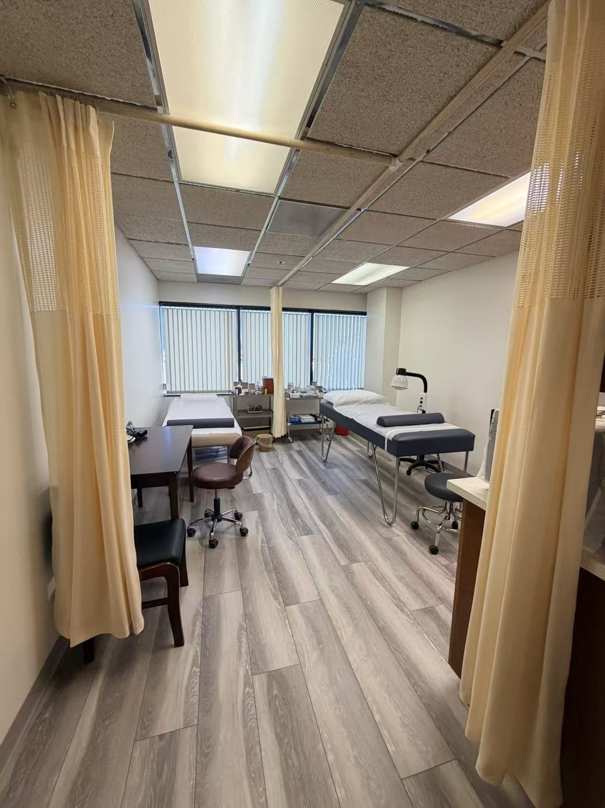
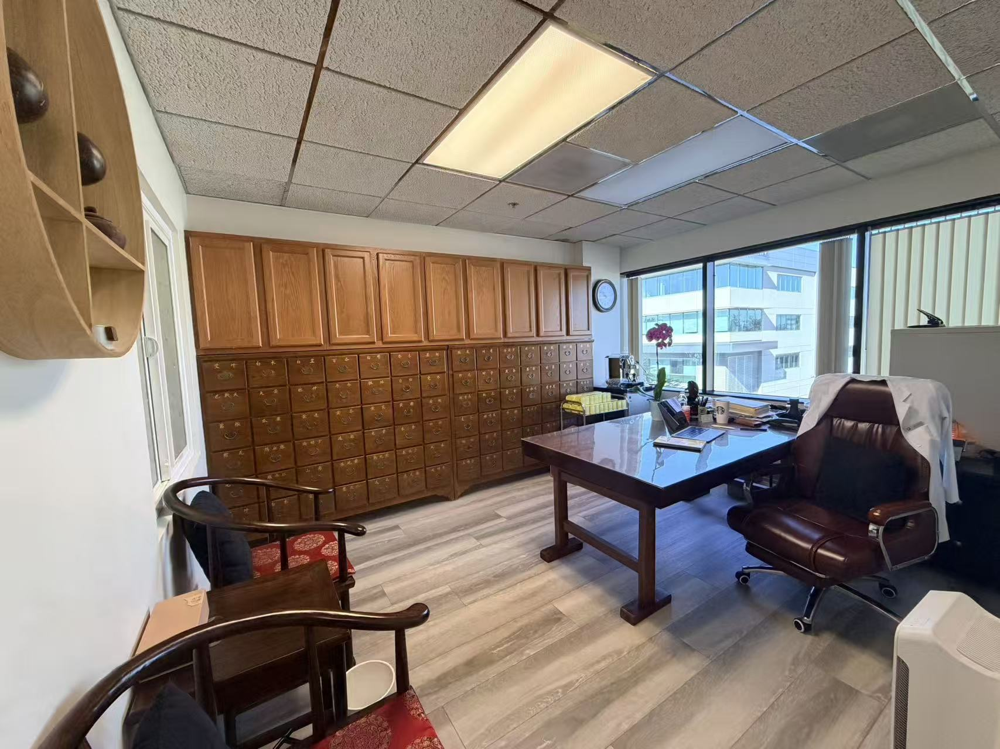
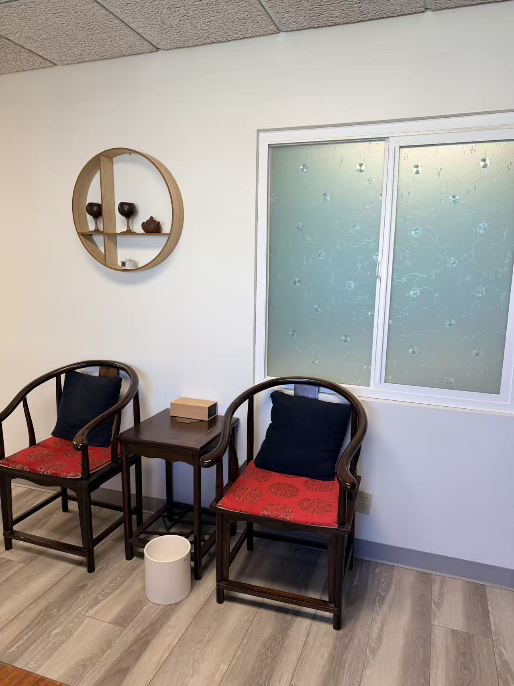

Health tips, wellness advice, and insights from Dr. He (Annie) Li.

Acupuncture has been used for thousands of years to support women's health — from regulating menstrual cycles and relieving period pain, to supporting fertility and easing the transition through menopause. As a practitioner with a decade of OB/GYN experience before specializing in Traditional Chinese Medicine, I see daily how these ancient practices can complement and enhance modern women's healthcare.
TCM views hormonal balance through the lens of Qi (vital energy), Blood, and the organ systems — particularly the Liver, Spleen, and Kidney. When these are in harmony, the menstrual cycle flows smoothly, fertility is supported, and emotional wellbeing is stable. Disruptions — from stress, diet, trauma, or simply life — can throw these systems out of balance.
Continue Reading →
Chinese herbal medicine has a history spanning more than 2,000 years — and it remains one of the most effective natural approaches for a wide range of health concerns, particularly for women's wellness. Learn how custom herbal formulas work, how they are prescribed, and what to expect.
Continue Reading →
In TCM, insomnia and chronic stress are not separate problems — they're often two expressions of the same underlying imbalance. Through acupuncture and targeted herbal formulas, we can calm the mind, restore balance, and bring back restful sleep — naturally, without dependency or side effects.
Continue Reading →